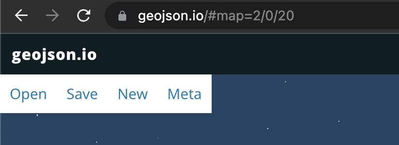
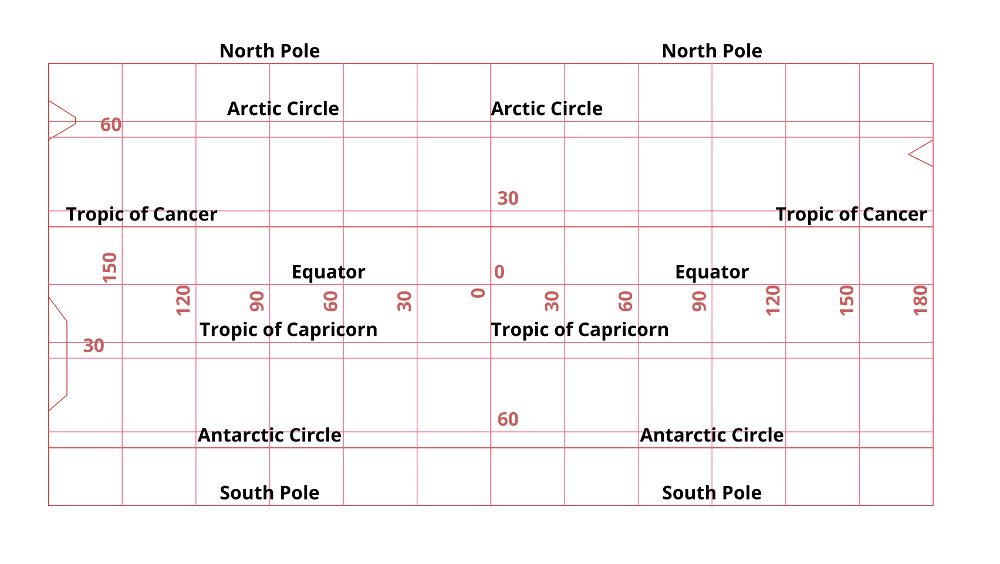
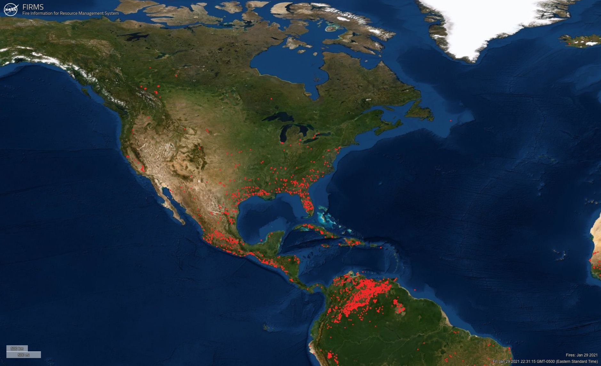
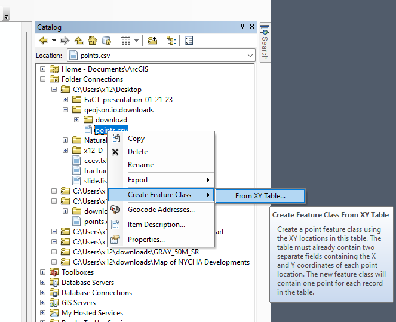
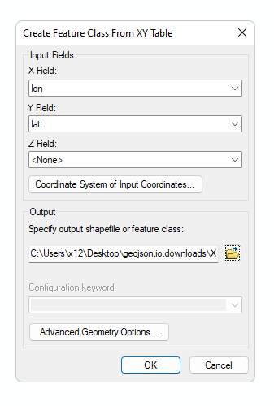
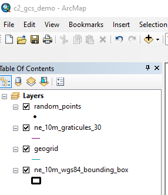

Geographic Coordinate System(s)

Preamble
When location on the Earth is described in spherical coordinates it is called Geographic, or Un-projected. The most common system for locating points on the earth is with “Longitudes” and “Latitudes”. In the following demonstrations, we will first test how coordinates are expressed in digital format, and how they are stored in three common spatial data types:
- Shapefiles (
.shp) - Geojson (
.jsonor.geojson) - Delimited Text (
.txtor.cvs)
Second, we will preview how ArcGIS handles the Geographic Coordinate System.
Third, we will explore how ArcGIS transforms digital number pairs representing latitude and longitude (ofen expressed as lat/lon or lat/long) into geometry for mapping. Following this transformation, we will run a spatial process to count points within polygons which is a similar but different procedure and outcome than our first class spatial join between John Snow’s pump thiessen polygons and Cholera deaths data.
Data
In Part I, we will generally create our own data utilizing the online utility geojson.io:

In Part II, we will download and utilize the following directory:

In Part III, we will utilize data from Nasa’s Fire Information for Resource Management System (FIRMS) to transform delimited text into points geometry and run a spatial process to aggregate and summarize called Tabulate Intersection.

Part I: Digital Numbers, Latitude and Longitude; and three spatial formats
To start, we will utilize Google Maps to explore how interactive maps generally handle a digital number as lat/lon coordinates.
- Copy/Paste
40.690022, -74.045303into the google maps search box at upper left of interactive map:

Next, download the following
.cvsthat first represents the Statue of Liberty, followed by a series of shortened decimal digits. When loaded to geojson.io, explore how these points behave in the geojson interactive map:

- With the
.csvdownloaded, import this file to geojson.io utilizing theopentab upper left:

Together we will explore how geojson.io handles the original lat/lon digital number pairs into the .geojson file format:

.geojsonNext, at geojson.io, save the Statue of Liberty data first as a .csv, followed by .geojson followed by .shp. Download these three files into a directory that you make entitled geojson.io.downloads:


Next, unzip and extract the download directory so that you have access to the point.shp:

POINT.shp from the download compressed directoryNext open ArcGIS with a new .mxd and utilize ArcCatalog to connect to the directory geojson.io.downloads. Once complete, we will first transform the points.csv from a delimited text file to a feature that ArcGIS can utilize as both spatial geometry and attribute data (Feature Class):

Next, a coordinate system for the XY Table must be specified. Here we will point to WGS84 and view the results:



Part II: Exploring the Geographic Coordinate System (GCS) in ArcGIS
Open the project .mxd following a sucessful unzip from the Part II Data
Once complete, c2_gcs_demo.mxd should appear as follows at the TOC:

Together we will review how ArcGIS generally handles Geographic Coordinate Systems (unprojected data).
Part III: Delimited Text and Spatial Operations in ArcGIS
In this final part III, FIRMS fire data for the United States is located within a .csv with locational lat/lon fields. We will first utilize ArcCatalog > XY Table > Feature Class to transform the delimited text to spatial data. Once complete, we will run a Tabulate Intersection tool between California Counties and the FIRMS fire points in order to achieve an aggregated count summary with percentage breakdown per county.
Learning this step will aid in the second assignment which we will cover in depth in Class 2, Lab 2 on Wednesday.
First unzip the Part III data and open the fire_points.mxd. Make sure the ArcCatalog connection is available in the fire_points.mxd. If not, make that connection now.

Next, as in Part II, ArcCatalog > XY Table > Feature Class the MODIS_C6_USA... file into a feature class. Add both the new feature class and CA_Counties_TIGER2016.shp to the TOC, view results.
Next Zoom Data Frame to Calfornia:

Next, search for Tabulate Intersection in Search and populate the tool as follows:


Review results of Tabulate Intersection:

Concluding Remarks
In this exploratory analysis for tabular data with geographic coordinates (lat/lon), we saw how digital number digits are important for the conformity of map points to their representative location on the Earth’s surface. We then worked with several file formats typical in the GIS realm to represent points features. Finally we tabulated a spatial relationship between points and polygons in an overlay relationship in order aggregate and summarize in a meaningful way. We will use this part III tabulation process in this week’s upcoming assignment, detailed in more depth in Class 2, Technical Lab 2.